Chapter 2: Tactile Sensor Technology — The Skin of Robots
Overview
Chapter 1 established why touch is essential for robotic manipulation. This chapter examines the sensor technologies that physically realize this sense of touch — from piezoresistive transduction to the vision-based optical sensors that now dominate the field, culminating in integrated designs such as Digit 360 and the F-TAC Hand.
After reading this chapter, you will be able to... - Explain the physical transduction principles of major tactile sensor types. - Understand the operating mechanism, strengths, and limitations of vision-based optical tactile sensors. - Articulate why multi-axis sensing is essential and how it is implemented. - Apply sensor selection criteria to different application scenarios.
2.1 Sensing Physics: Transduction Principles
Tactile sensors convert physical contact into electrical signals through various transduction mechanisms. Building on the taxonomy established by Dahiya et al. [1], we review the principal approaches.
2.1.1 Piezoresistive
These sensors measure changes in material resistance caused by contact. Their simplicity and low cost make them among the most widely used. Sundaram et al. [9] deployed 548 piezoresistive sensors on a human hand (the STAG glove), recording force distributions during grasping at high spatial resolution (Nature, 2019).
Commercial Products:
 |
 |
| Interlink FSR 400 | Tekscan FlexiForce A201 |
- Interlink FSR 400: Single-zone FSR based on Polymer Thick Film (PTF) technology — resistance decreases with increasing force.
- Tekscan FlexiForce A201: Ultra-thin piezoresistive force sensor with 4.4 N / 111 N / 445 N range options.

- Sensible Robotics: An 80-taxel piezoresistive tactile array with ~2 mm pitch, measuring forces from <0.1 N to 100 N at up to 1 kHz, with >80 dB dynamic range, 12-bit output, 1M+ cycle durability, and I2C/SPI/USB/UART/CAN interfaces.
Strengths: Low cost, simple construction, high sensitivity, thin form factor for easy attachment to robot fingers/grippers
Limitations: Hysteresis, temperature dependence, drift under repeated use, difficulty with absolute force measurement
2.1.2 Capacitive
Capacitive sensors detect changes in capacitance between two electrodes. Murphy et al.[6] implemented teaching by demonstration with 102 capacitive sensors. A notable advantage is proximity sensing — the ability to detect approaching objects before contact.
Commercial Products:
 |
 |
| Robotiq TSF-85 | PPS RoboTact |
- Robotiq TSF-85: Capacitive array-based sensor with 28 taxels, 1000 Hz sampling, and 0–225 N range.
- PPS (Pressure Profile Systems) RoboTact: Flexible capacitive tactile sensing system.
Notable Research Design — CoinFT [30]: A compact capacitive 6-axis force/torque sensor the size of a coin — 2 mm thick, weighing only 2 g, costing less than $10 in materials. Two PCBs with comb-patterned electrode traces are stacked together, connected by an array of silicon rubber pillars as the dielectric layer. By leveraging the chip's ability to internally reconfigure electrodes, CoinFT effectively senses all six axes from a single pair of PCBs. Its sensitivity and dynamic range are tunable by adjusting pillar diameter (100-200 μm) and material properties, enabling application-specific optimization. CoinFT achieves ~360 Hz sampling and survives hammer-strike impulse testing — a critical advantage for unstructured environments where incidental contact is common. The design is open-source for academic use (→ Section 2.3 for detailed comparison).
Strengths: High sensitivity, repeatability, stability; well-suited for static force/pressure distribution measurement; design flexibility; proximity sensing
Limitations: Parasitic capacitance, long-wire noise, front-end electronics complexity; susceptibility to EMI
2.1.3 Optical — Vision-Based Tactile Sensors
These sensors image the deformation of a transparent gel or elastomer using an embedded camera, extracting contact information from the resulting images. This approach has become the dominant paradigm in tactile robotics research — discussed in detail in Section 2.2.
2.1.4 Magnetic
Combinations of magnets with Hall-effect or magnetoresistive sensors measure deformation. ReSkin [7] introduced a magnetic elastomer tactile skin costing less than $6 per unit, 2-3 mm thick, and durable for 50,000+ interactions. The key innovation is separating electronics from the passive sensing surface. AnySkin [8] advanced this idea to achieve 12-second replacement without recalibration, maintaining 92% slip detection accuracy.
Key Paper: Bhirangi, R., Hellebrekers, T., Majidi, C., & Gupta, A. (2021). "ReSkin: Versatile, Replaceable, Lasting Tactile Skin #13s." arXiv preprint. A magnetic elastomer-based, low-cost ($6/unit), replaceable tactile skin offering a practical answer to the sensor durability challenge in industrial settings.
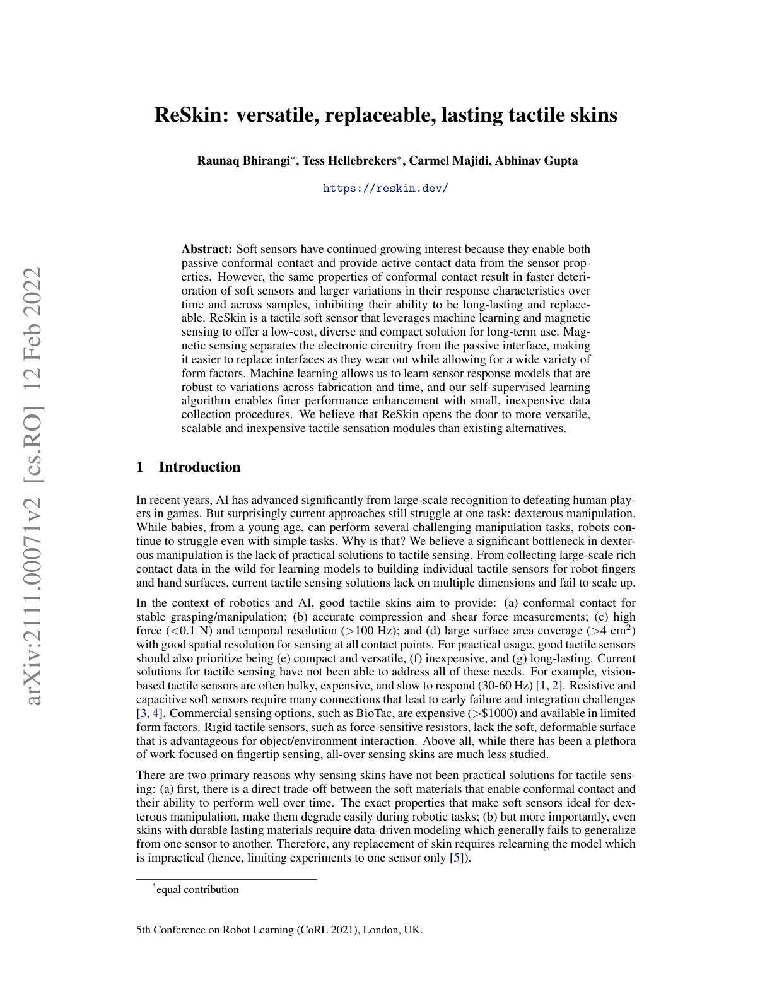
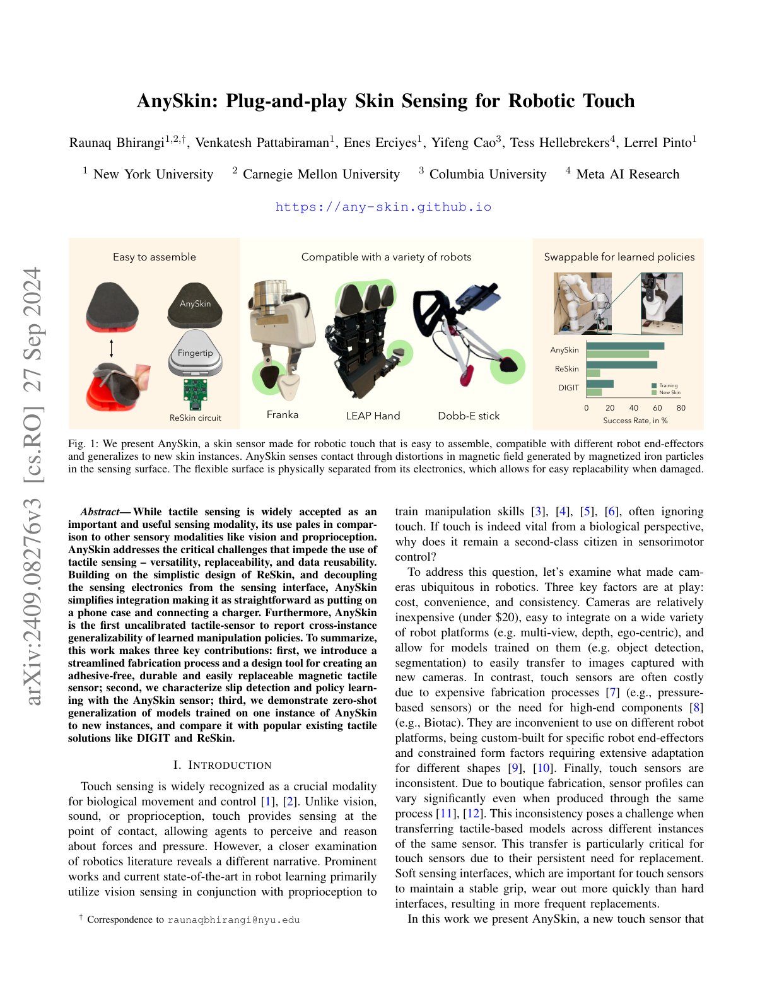
Commercial Products:
 |
 |
| XELA uSkin | ReSkin |
- XELA uSkin: Three-axis tactile sensing in a thin, soft package. Up to 64 sensing points per module, 0.1 gf resolution, 500 Hz sampling, measuring both shear and normal forces per sensing point.
The OSMO glove[27] #18 uses 12 three-axis magnetic sensors to simultaneously measure normal and shear forces, with MuMetal shielding to suppress external magnetic interference (Chapter 6.3).
2.1.5 Piezoelectric
Piezoelectric materials (PZT, PVDF) generate charge under deformation. These sensors excel at detecting dynamic changes — vibration and texture — rather than static forces, serving as functional analogs of Pacinian corpuscles. Combined with energy harvesting, self-powered sensors become feasible [12].
Commercial Products:

- TE Connectivity DT1-028K: Piezo film sensor element with high sensitivity to mechanical stimuli, excelling at vibration, impact, and transient sensing. Limited in static force measurement — surface charges neutralize over time, making sustained load reading difficult.
2.1.6 Strain-Gauge / MEMS
Strain-gauge sensors measure micro-deformations of elastic bodies under external force as changes in electrical resistance. Widely used as 6-axis force/torque (F/T) sensors, they offer high accuracy and resolution.
Commercial Products:
 |
 |
| ATI Nano17 | Adin Miniature FT |
- ATI Nano17: A compact commercial 6-axis F/T sensor (17 mm diameter, 14.5 mm height) with silicon strain gauges and high SNR.
- Adin Miniature FT: An even smaller 6-axis F/T sensor (15 mm diameter, 10.5 mm height).
The design space for 6-axis F/T sensors has been explored across multiple transduction approaches. Kim et al.[2] developed an optoelectronic 6-axis F/T sensor using optical measurement principles (IEEE/ASME Trans. Mechatronics), while Palli et al. [33] proposed a cross-beam design with photodetectors and LEDs measuring deflection via reflected light (Sensors and Actuators A) — both optimized for robot hand/gripper integration. On the vision-based side, Fernandez et al.[3] introduced Visiflex, a low-cost compliant tactile fingertip for force, torque, and contact sensing using a compact camera (IEEE RA-L), bridging vision-based tactile sensing with F/T measurement.
Despite this research diversity, commercial 6-axis F/T sensors remain prohibitively expensive: ATI sensors start at >$7,000, Mitsumi at >$1,000, and Resense at >$5,000 [31]. They are also fragile — dropping one can cause calibration loss, with repairs costing thousands of dollars. Industrial robot companies such as Flexiv and OnRobot integrate F/T sensing into their collaborative robots, but the sensors remain expensive OEM components. These constraints make it nearly impossible to equip small robot hands, wearable robots, or drones with conventional F/T sensors, motivating research into compact, affordable alternatives such as CoinFT (→ Section 2.1.2).
Strengths: High accuracy, resolution, and calibration quality; well-suited for wrist/fingertip F/T sensing
Limitations: Better suited for point F/T sensing than wide-area soft tactile skin; high cost ($7K+) and poor scalability for large-area coverage; fragile to impact
2.1.7 Fluidic / Pneumatic
These sensors measure contact forces through pressure changes in internal fluid (liquid or air). When external force deforms the fluid chamber, embedded pressure sensors detect the change. This approach provides compliance close to human fingertip contact behavior.
Commercial Products:
 |
 |
| SynTouch BioTac | Allegro Hand V5 Plus fingertip pressure sensor |
- SynTouch BioTac: A multimodal sensor that simultaneously detects force, vibration, and temperature using fluid pressure and skin deformation. Its rigid core + skin + fluid architecture produces contact behavior close to a human fingertip.
- Allegro Hand V5 Plus fingertip pressure sensor: A pneumatic tactile sensor using capacitive pressure sensing for omnidirectional contact detection.
Strengths: Good compliance; human-like contact behavior; excellent for fragile object handling, slip detection, and texture recognition
Limitations: Complex chamber/fluid/sealing/packaging structures result in larger volume and higher integration difficulty than thin-film arrays. Internal fluid leakage causing corrosion is a frequently reported practical issue
2.1.8 Thermal
Thermal sensors measure thermal gradients to discriminate the material properties of contacted objects. Heater-thermistor combinations detect differences in heat transfer between the sensor and the object.
Commercial Products:

- SynTouch BioTac SP: Provides the BioTac's thermal modality in a compact single-phalanx form factor.
Strengths: Useful for discriminating materials (metal, plastic, wood); strong for thermal cue-based material recognition
Limitations: Thermal channel is slower than force channels; significantly affected by ambient temperature and contact duration
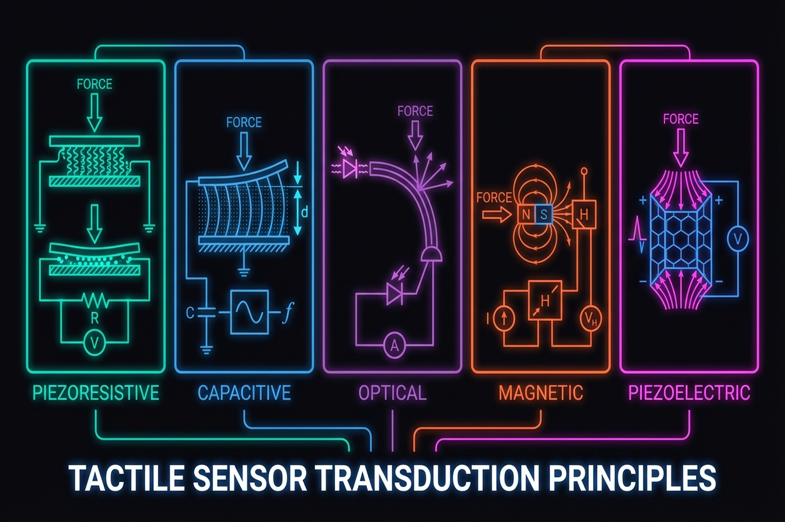
Transduction Comparison
| Property | Piezoresistive | Capacitive | Optical/Vision | Magnetic | Piezoelectric | Strain-Gauge | Fluidic | Thermal |
|---|---|---|---|---|---|---|---|---|
| Spatial resolution | Medium | Medium | Very high | Low-Medium | Low | Low (point) | Medium | Low |
| Force range | Wide | Wide | Medium | Medium | Wide (dynamic) | Very wide | Medium | — |
| Multi-axis | Difficult | Possible | Excellent | Excellent | Difficult | Excellent (6-axis) | Possible | — |
| Durability | Moderate | Moderate | Low (gel wear) | High | High | Very high | Moderate (leakage) | Moderate |
| Cost | Very low | Low | Medium | Low | Medium | High | High | High |
| Size | Compact | Compact | Bulky (camera) | Compact | Compact | Compact | Bulky (fluid) | Compact |
| Representative | FSR 400, STAG | Robotiq TSF-85 | GelSight, DIGIT | ReSkin, XELA uSkin | DT1-028K | ATI Nano17 | BioTac | BioTac SP |
Quick Selection Guide: Best general-purpose: capacitive. Richest information for research: optical/vision-based. For shear/slip: magnetic. For vibration/micro-slip only: piezoelectric. For biomimetic fingertips: fluidic/pneumatic.
2.2 Vision-Based Tactile Sensors: From GelSight to Digit 360
Vision-based optical tactile sensors have dominated tactile research since GelSight's introduction in 2017. Their core principle is photometric stereo: LEDs embedded in an elastomeric gel illuminate its surface; a camera captures deformation patterns caused by contact; and the resulting images are processed to reconstruct a 3D contact map.
GelSight (2017)
Developed by Yuan, Dong, and Adelson[2] at MIT CSAIL, GelSight uses photometric stereo to reconstruct contact surface geometry at micrometer resolution. Its paradigm-shifting contribution was bringing "the tools of vision" to tactile sensing — unlike electrical transduction methods, GelSight directly leverages the rich ecosystem of image processing and deep learning.
Key Paper: Yuan, W., Dong, S., & Adelson, E. H. (2017). "GelSight: High-Resolution Robot Tactile Sensors for Estimating Geometry and Force." Sensors, 17(12), 2762. The foundational paper for photometric stereo-based high-resolution 3D tactile sensing. With 600+ citations, it marks the beginning of the vision-based tactile sensor paradigm.
GelSight Wedge (2021)
Wang et al.[3] developed a wedge-shaped variant that fits standard robot grippers — a critical step from research prototype to practical integration.
DIGIT (2020)
Meta FAIR's DIGIT [4] was a milestone in miniaturization and cost reduction. At $350, it was over 10x cheaper than BioTac ($5K-10K), with a compact form factor suitable for mounting on individual fingers of a dexterous hand. DIGIT democratized tactile research and became the standard sensor for numerous subsequent studies.
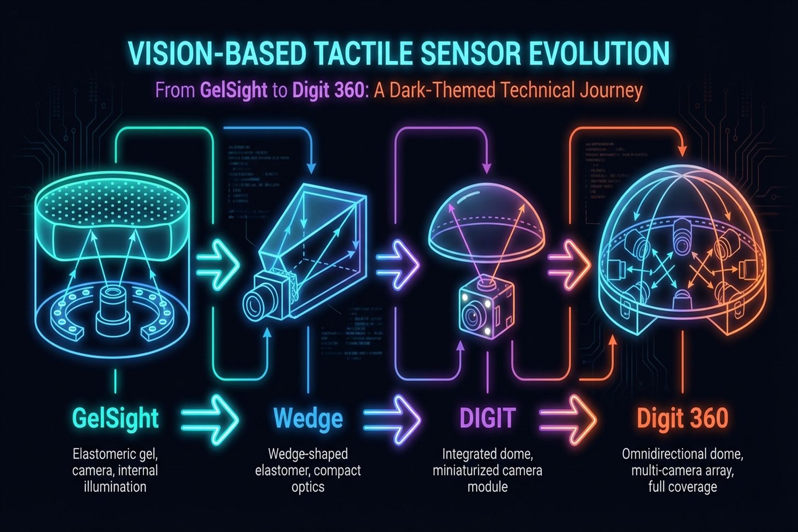
Digit 360 (2024)
Lambeta et al.[5] presented the most comprehensive artificial fingertip to date:
- 8.3M taxels: Approximately 8.3 million sensing points
- 18+ sensing modalities: 3D geometry, force (normal + shear), vibration, temperature, proximity, and more
- Omnidirectional touch: Full fingertip surface coverage
- 1 mN force resolution: Approaching human-level sensitivity
This sensor integrates multimodal sensing corresponding to multiple human receptor types into a single fingertip — the closest attempt yet to a "complete" artificial touch organ.
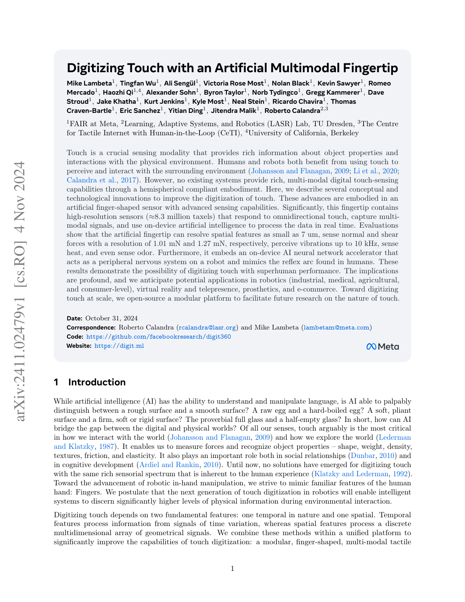
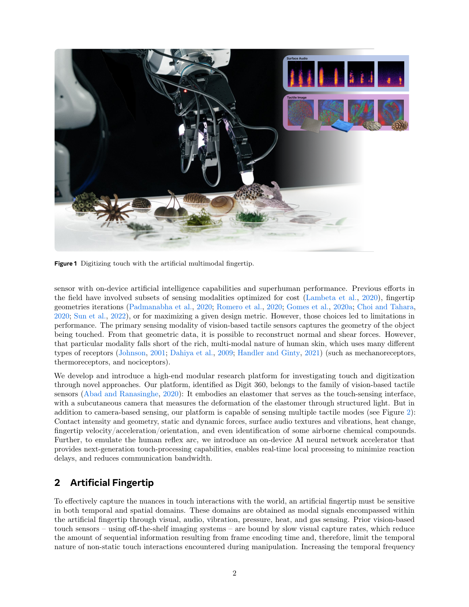
Modularized GelSight Design (2025)
Agarwal et al.[6] proposed a systematic modular design framework for GelSight-family sensors (IJRR), enabling application-specific customization by combining gel materials, illumination layouts, camera positions, and housings as modular units.
Vision-Based F/T Sensing: Visiflex (2021)
Fernandez et al.[3] introduced Visiflex (IEEE RA-L), a low-cost compliant tactile fingertip that uses a single camera to estimate force, torque, and contact geometry. Unlike photometric stereo approaches (GelSight, DIGIT), Visiflex tracks marker displacement in an elastomer to infer 6-axis F/T — combining the accessibility of vision-based sensing with multi-axis force measurement at the fingertip level. This approach offers a middle ground between high-resolution gel-based sensors and compact strain-gauge F/T sensors.
Limitations of Vision-Based Sensors
The primary limitation is durability. Gel surfaces wear with repeated contact; light sources degrade; dust infiltration and cleaning difficulties constrain long-term industrial operation. When the F-TAC Hand[15] placed 17 sensors across the hand, it also created 17 potential failure points. AnySkin's [2024] 12-second replacement approach offers one practical remedy (Chapter 13.1).
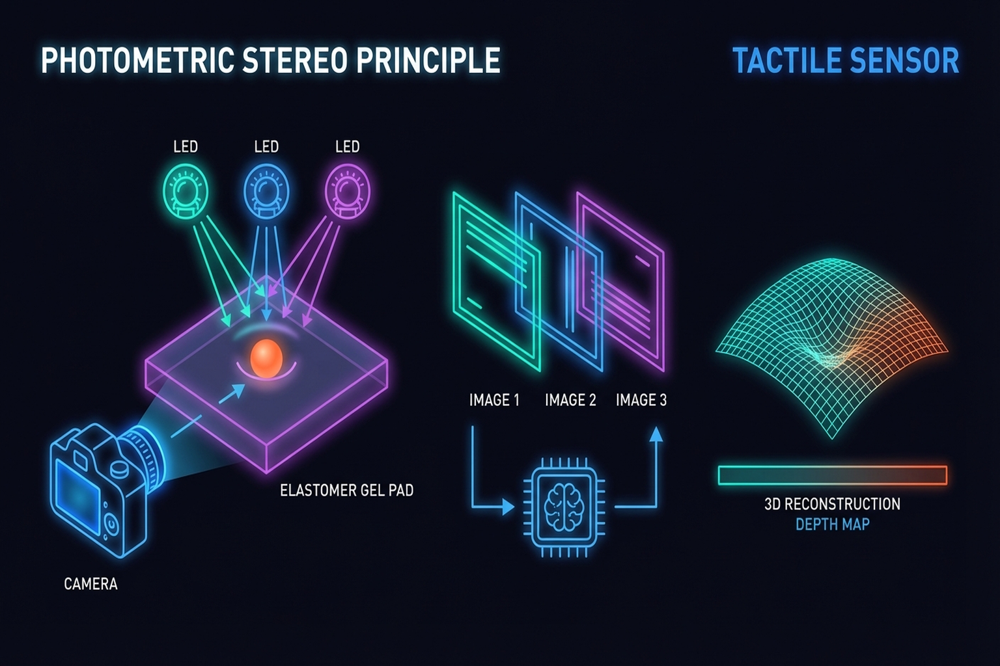
2.3 Multi-Axis Sensing: The Importance of Normal and Shear Forces
As emphasized in Seminar 2 (Taejoon), normal force alone is insufficient. Shear force is essential for slip detection, object orientation estimation, and force-noise decoupling.
Motivation for Multi-Axis Sensing
- Efficient robot learning: Multi-dimensional tactile information improves policy sample efficiency [27]
- Slip detection: Shear force changes are leading indicators of incipient slip [23]
- Object orientation detection: Tangential force vectors estimate object tilt [24]
- Force-noise decoupling: Multi-axis information separates true contact forces from sensor noise [25]
The Seminar 2 Multi-Axis Sensor
The custom multi-axis tactile sensor presented in Seminar 2 measures 10 x 10 x 6.5 mm:
- Normal force range: ~50 N
- Shear force range: ~5 N
- Sampling rate: 100 Hz
- Validated on robot hand integration
This compact sensor addresses the bulk problem of vision-based sensors while still providing shear information.
CoinFT: A Case Study in Compact Multi-Axis Sensing
CoinFT [30] provides a striking contrast to both vision-based and conventional strain-gauge F/T sensors. As a capacitive 6-axis sensor weighing 2 g and costing <$10, it addresses the three main barriers to F/T sensor deployment: cost, size, and fragility.
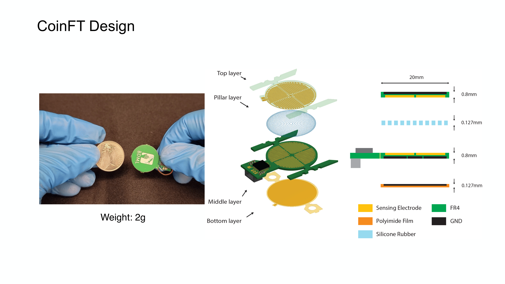
| Property | ATI Nano17 | Mitsumi | CoinFT | Seminar 2 Sensor |
|---|---|---|---|---|
| Axes | 6 | 6 | 6 | 3+ (normal + shear) |
| Size | Ø17 × 14.5 mm | — | 2 mm thick, coin-sized | 10 × 10 × 6.5 mm |
| Weight | 9.1 g | — | 2 g | — |
| Cost | >$7,000 | >$1,000 | <$10 | Research prototype |
| Sampling | 7,000 Hz | — | ~360 Hz | 100 Hz |
| Robustness | Fragile (drop = recal) | Moderate | Survives hammer strikes | — |
| Open-source | No | No | Yes (academic) | No |
CoinFT's tunability — adjusting pillar diameter, material, and pattern — enables optimizing the sensor for specific applications (e.g., fingertip grasping vs. wrist-level force sensing). It has been adopted by multiple universities globally and integrated into dexterous hands for DexForce [Chen et al., 2025] (Chapter 7.4).
CoinFT Adoption Beyond the Original Lab: CoinFT's open-source design has enabled adoption across diverse research domains:
- Haptic devices: Winston et al.[6] integrated CoinFT into Fourigami, a 4-DoF force-controlled origami finger pad haptic device (IEEE Trans. Robotics), using CoinFT for closed-loop force control during haptic rendering.
- Directional haptic cues: Yoshida et al.[5] used CoinFT to initialize and control tactor contact force for directional shear haptic cues on the forearm (IEEE Trans. Haptics).
- Wearable haptics: Sarac et al. [37] employed CoinFT to measure perceived intensities of normal and shear skin stimuli in a wearable haptic bracelet (IEEE RA-L), studying perceptual thresholds for wrist-mounted haptic feedback.
These applications demonstrate that CoinFT's compact, affordable design has enabled force-controlled research in domains beyond robot manipulation — haptics, wearables, and human perception studies — validating the sensor's versatility across different force ranges and form factors.
Key Paper: Choi, H., Kim, A., & Cutkosky, M. R. (2024). "CoinFT: A Compact and Affordable Capacitive Six-Axis Force/Torque Sensor." IEEE Sensors Journal. An open-source, coin-sized 6-axis F/T sensor that achieves comparable accuracy to commercial sensors at 1/700th the cost.
Key Paper: Fang, J., et al. (2025). "Force Measurement Technology of Vision-Based Tactile Sensor." Advanced Intelligent Systems (Wiley). A comprehensive review of force measurement approaches in vision-based tactile sensors, covering calibration methods and multi-axis force estimation techniques.
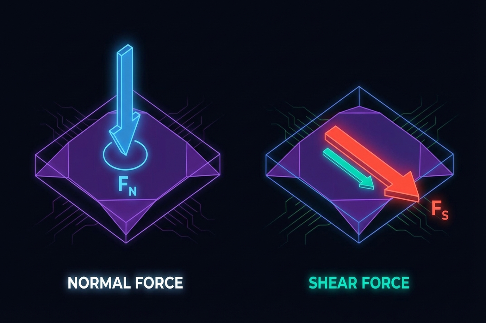
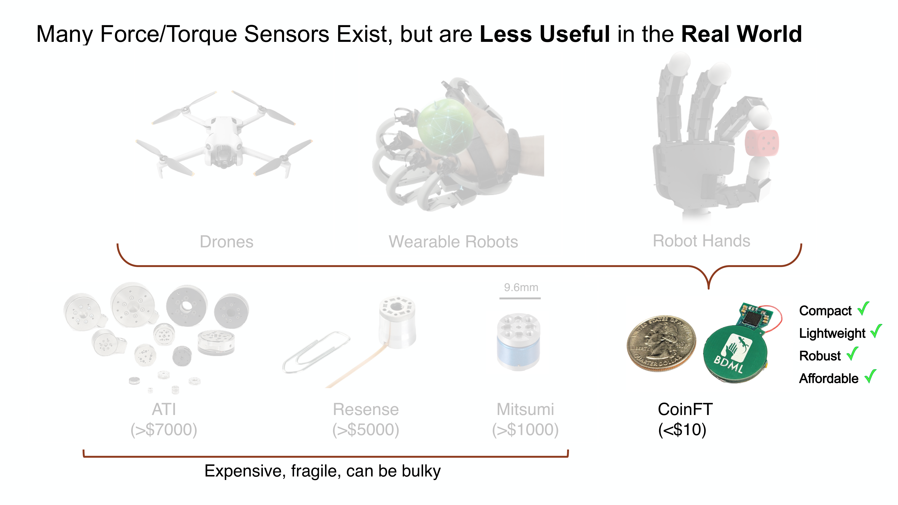
2.4 Sensor-Integrated Design: The F-TAC Hand Case Study
No matter how capable a sensor may be, its practical value is limited unless integrated into a robot hand. The F-TAC Hand [2025, Nature Machine Intelligence] represents the current state of the art in integrated design:
- 17 tactile sensors covering 70% of the hand surface
- 0.1 mm resolution for fine feature detection
- 100% tactile-informed adaptation success in multi-object grasping (M=1.000, SD=0.000 vs. 53.5% without tactile feedback, p=2.1×10⁻¹⁷)
- Optimized sensor placement concentrated in high-contact-probability regions
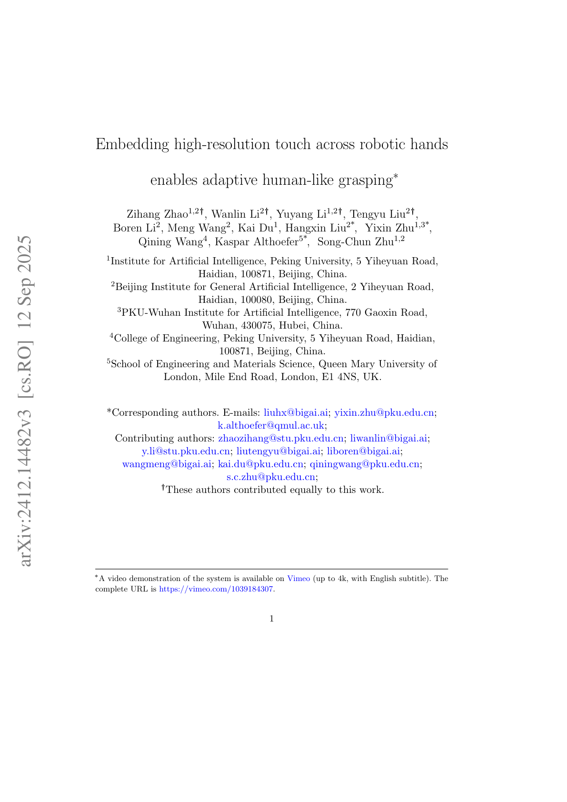
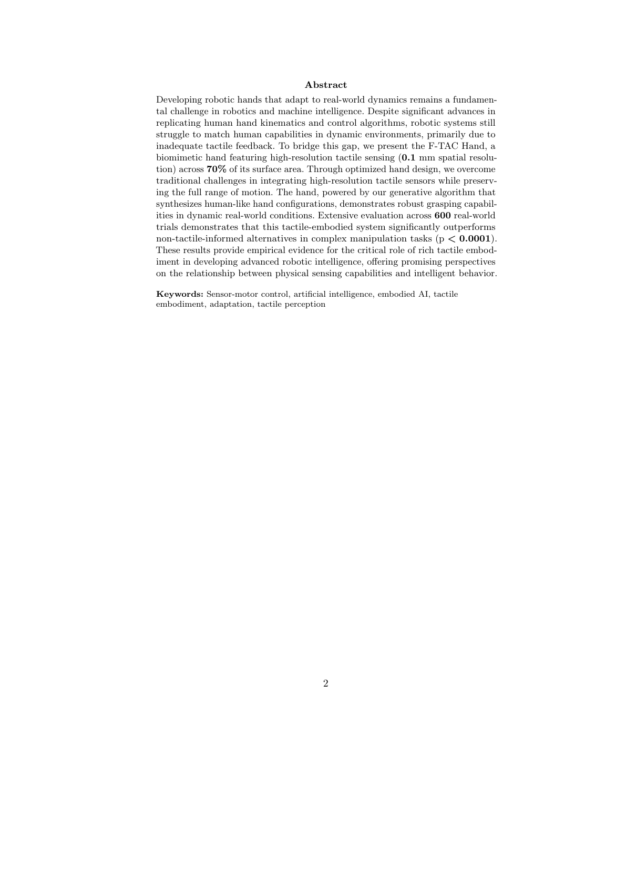
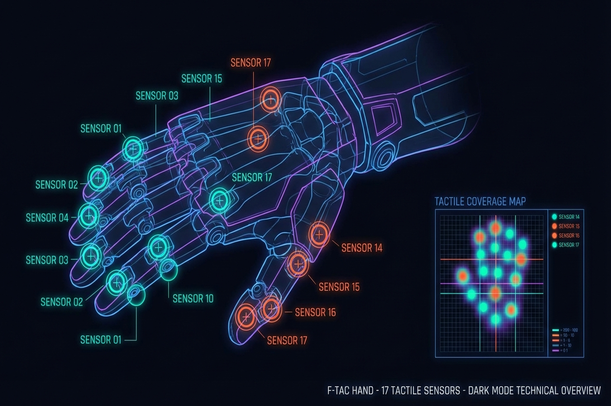
The F-TAC Hand's success demonstrates the importance of integration methodology over sensor technology alone. Co-optimizing sensor type, count, and placement alongside hand design is likely to become standard practice.
3D-ViTac [16] fused dense tactile sensors (3 mm² resolution) with vision into a unified 3D representation and used Diffusion Policy to achieve 85-90% success on bimanual dexterous tasks — versus 45-50% with vision only (CoRL 2024) (Chapter 11.1).
Soft Robotic Hand with Tactile Palm-Finger Coordination [2025, Nature Communications] improved manipulation performance through coordinated tactile sensing between palm and fingers in a soft robotic hand.
2.5 Sensor Comparison and Selection Guide
Sensor selection depends on application requirements. The table below recommends sensor types for common scenarios:
| Application | Key Requirement | Recommended Sensor | Representative Example |
|---|---|---|---|
| Research dexterous manipulation | High resolution, low cost | Vision-based (DIGIT) | DeXtreme, Robot Synesthesia |
| Industrial gripper | Durability, multi-axis | Magnetic (ReSkin/AnySkin) | Factory automation |
| Human hand data collection | Compact, flexible, multi-axis | Magnetic (OSMO) | OSMO glove |
| Whole-hand coverage | Wide area, binary contact | Piezoresistive array | Yin et al. (2023) |
| Texture/surface classification | High-resolution 3D | Vision-based (GelSight) | UniTouch |
| Slip detection | Fast response, shear sensing | Multi-axis (magnetic/capacitive) | Universal Slip Detection |
Key Insight: Sensor selection is not a problem with a single optimal answer but should be approached from a task-sensor fitness perspective. The tactile data taxonomy by Albini et al.[6] systematizes the decision flow from sensor hardware to data representation (Chapter 3).
2.6 Emerging Trends: Neuromorphic and Self-Healing Sensors
2.6.1 Neuromorphic Tactile Sensors
Neuromorphic sensors, inspired by the biological nervous system, use event-driven processing to maximize energy efficiency and temporal resolution. NRE-skin [2025, PNAS] integrates high-resolution touch, active pain and injury detection, and local reflexes through a hierarchical architecture with modular quick-release repair.
The spike-based neural coding survey [2025, Microsystems & Nanoengineering] demonstrates that CMOS/memristor hardware combined with spiking neural network (SNN) decoding can achieve 10x super-resolution. Bioinspired Spiking Architecture [2026, Nature Communications] demonstrated efficient tactile encoding under energy constraints.
2.6.2 Self-Healing and Multisensory E-Skin
Multisensory Electronic Skin [2025, PNAS] achieved decoupled pressure-temperature sensing with self-healing materials, extending sensor lifespan. Such approaches have the potential to fundamentally address the tactile sensor durability problem in industrial environments (Chapter 13.1).
2.6.3 Physically-Based Rendering for Sensor Design
Vision-Based Tactile Sensor Design Using Physically Based Rendering [2025, Nature Communications Engineering] proposed simulating optical tactile sensor designs through PBR, reducing design trial-and-error and enabling digital twin-based sensor development.
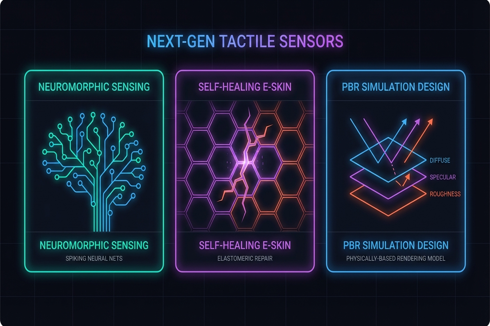
2.7 Tactile Sensing in Space Robotics
Tactile sensing for space robotics presents unique design requirements — vacuum, extreme temperatures, and radiation. The Comprehensive Review of Tactile Sensing Technologies in Space Robotics [2025, Chinese Journal of Aeronautics] surveys these extreme-environment challenges and sensor design strategies. Lessons from space sensor design transfer to terrestrial industrial sensor development.
Summary and Outlook
Tactile sensor technology has undergone a paradigm shift with the emergence of vision-based optical sensors. From GelSight (DIGIT at ~$350) to Digit 360 (8.3M taxels, 18+ modalities), resolution and multimodality have advanced dramatically. Simultaneously, magnetic sensors like ReSkin and AnySkin have realized replaceable tactile skins at ~$6 per unit, offering a practical answer to the durability problem.
Key challenges remain: gel wear, recalibration needs, industrial environment validation, and achieving miniaturization alongside multi-axis sensing. With Sanctuary AI integrating 5 mN sensitivity into a commercial humanoid, and Meta's Digit Plexus pursuing standardized sensor-hand interfaces, touch is transitioning from "optional" to "standard."
The next chapter addresses how the data generated by these sensors is represented and collected (Chapter 3: Tactile Data).
References
- Dahiya, R. S., Metta, G., Valle, M., & Sandini, G. (2010). Tactile sensing: From humans to humanoids. IEEE Transactions on Robotics, 26(1), 1-20. https://doi.org/10.1109/TRO.2009.2033627
- Yuan, W., Dong, S., & Adelson, E. H. (2017). GelSight: High-resolution robot tactile sensors for estimating geometry and force. Sensors, 17(12), 2762. https://doi.org/10.3390/s17122762
- Wang, S., She, Y., Romero, B., & Adelson, E. H. (2021). GelSight Wedge: Measuring high-resolution 3D contact geometry with a compact robot finger. IEEE ICRA 2021. https://doi.org/10.1109/ICRA48506.2021.9560783
- Lambeta, M., Chou, P.-W., Tian, S., Yang, B., Maloon, B., Most, V. R., ... & Calandra, R. (2020). DIGIT: A novel design for a low-cost compact high-resolution tactile sensor with application to in-hand manipulation. IEEE Robotics and Automation Letters, 5(3), 3838-3845.
- Lambeta, M., Wu, T., Sengul, A., & Calandra, R. (2024). Digitizing touch with an artificial multimodal fingertip (Digit 360). arXiv preprint, arXiv:2411.02834.
- Agarwal, A., Mirzaee, M. A., Sun, X., & Yuan, W. (2025). A modularized design approach for GelSight family of vision-based tactile sensors. International Journal of Robotics Research. https://doi.org/10.1177/02783649251339680
- Bhirangi, R., Hellebrekers, T., Majidi, C., & Gupta, A. (2021). ReSkin: Versatile, replaceable, lasting tactile skins. arXiv preprint, arXiv:2111.00071. [#13](https://terry.artlab.ai/en/posts/2407-tactile-skin-inhand-translation)
- Bhirangi, R., Pattabiraman, V., Norcross, E., Shocher, A., & Pinto, L. (2024). AnySkin: Plug-and-play skin sensing for robotic touch. ICRA 2025. arXiv:2409.08276.
- Sundaram, S., Kellnhofer, P., Li, Y., Zhu, J.-Y., Torralba, A., & Matusik, W. (2019). Learning the signatures of the human grasp using a scalable tactile glove. Nature, 569, 698-702.
- Murphy, L., et al. (2025). Capacitive tactile sensing for teaching by demonstration. arXiv preprint.
- Fang, J., et al. (2025). Force measurement technology of vision-based tactile sensor. Advanced Intelligent Systems (Wiley). https://doi.org/10.1002/aisy.202400290
- Yu, et al. (2025). Recent progress in tactile sensing and machine learning for texture perception in humanoid robots. Interdisciplinary Materials (Wiley). https://doi.org/10.1002/idm2.12233
- Various. (2025). Comprehensive review of tactile sensing technologies in space robotics. Chinese Journal of Aeronautics. https://doi.org/10.1016/j.cja.2025.01.031
- Various. (2025). Vision-based tactile sensor design using physically based rendering. Communications Engineering (Nature). https://doi.org/10.1038/s44172-025-00350-4
- Zhao, Z., Li, W., Li, Y., Liu, T., Li, B., Wang, M., Du, K., Liu, H., Zhu, Y., Wang, Q., Althoefer, K., & Zhu, S.-C. (2025). Embedding high-resolution touch across robotic hands enables adaptive human-like grasping. Nature Machine Intelligence. https://doi.org/10.1038/s42256-025-01053-3
- Huang, B., Wang, Y., et al. (2024). 3D-ViTac: Learning fine-grained manipulation with visuo-tactile sensing. CoRL 2024. arXiv:2410.24091.
- Zhang, N., Ren, J., Dong, Y., Gu, G., & Zhu, X. (2025). Soft robotic hand with tactile palm-finger coordination. Nature Communications, 16, 2395. https://doi.org/10.1038/s41467-025-57741-6
- Gao, Y., Zhang, J., Zhang, H., et al. (2025). A neuromorphic robotic electronic skin with active pain and injury perception. PNAS. https://doi.org/10.1073/pnas.2520922122
- Various. (2025). Multisensory electronic skin with decoupled pressure-temperature sensing. PNAS.
- Various. (2025). Recent advances in spike-based neural coding for tactile perception. Microsystems & Nanoengineering (Nature). https://doi.org/10.1038/s41378-025-01074-3
- Various. (2026). Bioinspired spiking architecture for energy-constrained touch encoding. Nature Communications. https://doi.org/10.1038/s41467-026-68858-7
- Yin, Z.-H., et al. (2025). Multi-dimensional tactile sensing for efficient robot learning. arXiv preprint.
- Hossain, M., et al. (2025). Multi-axis tactile for object orientation detection. Sensors and Actuators A: Physical.
- Lach, L., et al. (2023). Tactile-based object orientation detection for blind manipulation. arXiv preprint.
- Cho, W., et al. (2025). Multi-dimensional tactile sensing for force/noise decoupling. ACS Applied Materials & Interfaces.
- Various. (2025). Recent advances in tactile sensing technologies for human-robot interaction. Sensors International. https://doi.org/10.1016/j.sintl.2025.100345
- Yin, J., Qi, H., Wi, Y., Kundu, S., Lambeta, M., Yang, W., Wang, C., Wu, T., Malik, J., & Hellebrekers, T. (2025). OSMO: Open-source tactile glove for human-to-robot skill transfer. arXiv preprint. arXiv:2512.08920. [#18](https://terry.artlab.ai/en/posts/2512-osmo-tactile-glove)
- Albini, A., Kaboli, M., Cannata, G., & Maiolino, P. (2025). Representing data in robotic tactile perception — A review. arXiv preprint (submitted to IEEE Trans. Robot.). arXiv:2510.10804.
- Choi, S. (Korea University). (2026). Commercial tactile sensor survey. https://www.notion.so/2026-03-26-Tactile-sensors-32f13b6f5ea48054a5e3f4cee07f00c6
- Choi, H., Kim, A., & Cutkosky, M. R. (2024). CoinFT: A compact and affordable capacitive six-axis force/torque sensor for robotic applications. IEEE Sensors Journal. https://coin-ft.github.io/
- Choi, H. (2026). Multimodal Data for Robot Manipulation: From Tactile Sensing to Scalable Human Demonstrations. SNU Data Science Seminar, Seoul National University.
- Kim, U.-H., Lee, D.-H., Kim, Y.-B., Seok, D.-Y., & Choi, H.-R. (2017). A novel six-axis force/torque sensor for robotic applications. IEEE/ASME Trans. Mechatronics, 22, 1381-1391.
- Palli, G., Moriello, L., Scarcia, U., & Melchiorri, C. (2014). Development of an optoelectronic 6-axis force/torque sensor. Sensors and Actuators A: Physical, 220, 333-346.
- Fernandez, A. J., Weng, H., Umbanhowar, P. B., & Lynch, K. M. (2021). ViSiFlex: A low-cost compliant tactile fingertip for force, torque, and contact sensing. IEEE RA-L, 6(2), 3009-3016.
- Winston, C., Choi, H., Jitosho, R., Zhakypov, Z., Palmer, J. E., Cutkosky, M. R., & Okamura, A. M. (2025). Fourigami: A 4-DoF force-controlled origami finger pad haptic device. IEEE Trans. Robotics.
- Yoshida, K. T., et al. (2024). Design and evaluation of a 3-DoF haptic device for directional shear cues on the forearm. IEEE Trans. Haptics, 17(3), 483-495.
- Sarac, M., et al. (2022). Perceived intensities of normal and shear skin stimuli using a wearable haptic bracelet. IEEE RA-L.